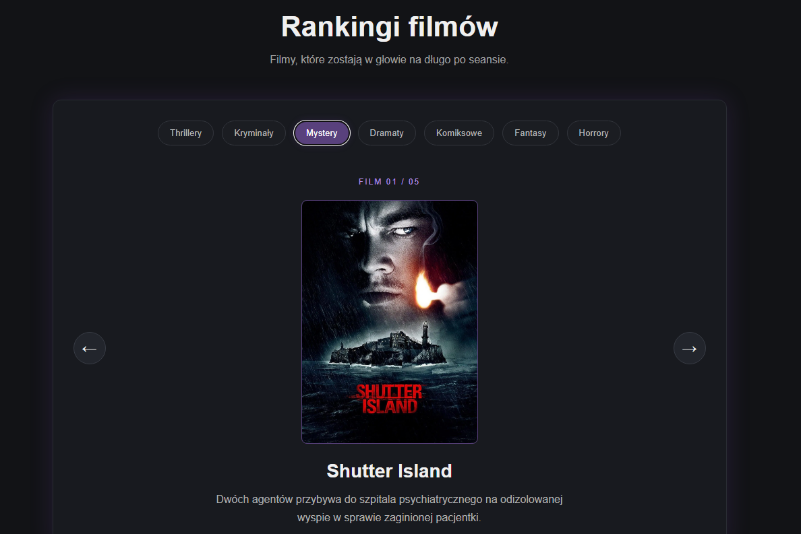

O mnie
Cześć! Nazywam się Dawid. Interesuję się programowaniem oraz piłką nożną.
W wolnym czasie lubię grać w gry komputerowe, oglądać filmy i rozwijać swoje umiejętności.
Gdy robię cokolwiek, uwielbiam słuchać muzyki. Pomaga mi się skupić oraz uspokoić. Głównie słucham rocka i hip-hopu, ale tak na ogół to wszystkiego, co wpadnie mi w ucho.
Ten ziomek po prawej to ja. 🙀

Zainteresowania
⚽ Piłka nożna
Piłka nożna to jedno z moich zainteresowań. Nie gram w żadnym klubie, ale lubię oglądać mecze. Kibicuję FC Barcelonie, której fanem jestem od dziecka.
🎵 Muzyka
Lubię słuchać muzyki, ponieważ pomaga mi się skupić i zrelaksować. Najczęściej wybieram rock i hip-hop, ale chętnie słucham też innych gatunków. Szczególnie lubię Red Hot Chili Peppers, Weezer oraz Kid'a Cudiego.
🎬 Filmy
Uwielbiam oglądać filmy ze względu na mnóstwo emocji, które towarzyszą mi podczas seansu. Szczególnie interesują mnie thrillery, kryminały i horrory. Poniżej możesz zobaczyć mój ranking filmów.
Zobacz mój ranking filmówProjekty

Movie Journal
Interaktywna strona z moimi rankingami filmów i ich podziałem na gatunki.
Zobacz projektPrzyszły projekt
Miejsce na kolejny projekt, który pojawi się w przyszłości, raczej.
WkrótceKontakt
Jeśli chcesz się ze mną skontaktować, możesz to zrobic klikając poniżej.